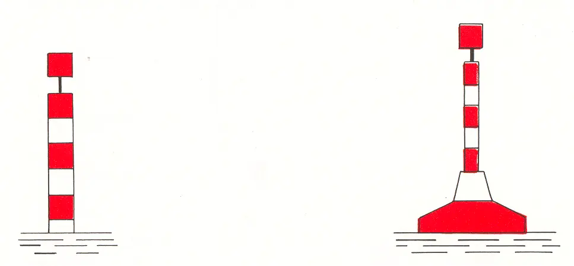
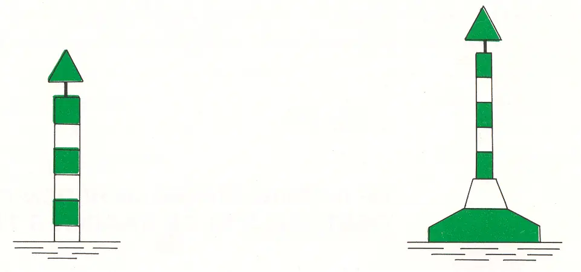

B Drijvende tekens
Rijnvaartpolitiereglement 1995
1. Rechterzijde

Kleur: | rode en witte horizontale banen |
Vorm: | sparboei (eveneens een lichtboei), drijf- of kopbaken |
Topteken: | rode cylinder |
Licht: | (indien aanwezig) rood periodelicht (in het algemeen voorzien van een radarreflector) |
2. Linkerzijde

Kleur: | groene en witte horizontale banen |
Vorm: | sparboei (eveneens een lichtboei), drijf- of kopbaken |
Topteken: | groene kegel met de punt naar boven |
Licht: | (indien aanwezig) groen periodelicht (in het algemeen voorzien van een radarreflector) |